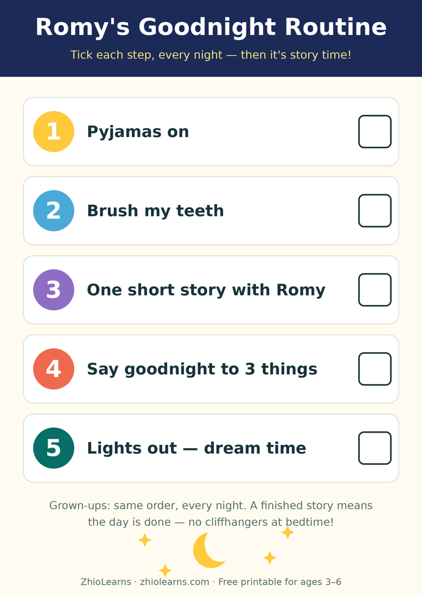

One Short Story, Then Lights Out: A Bedtime Routine That Actually Winds Kids Down
Some nights, bedtime takes twelve minutes. Other nights — same child, same house, same pyjamas — it takes an hour and three glasses of water, and it ends with somebody crying, and it isn't always the child.
When parents compare notes, the difference is rarely the book, the blanket, or the night-light. It's whether the evening had an order the child could predict. Little kids relax into what they can see coming. A routine they can recite — pyjamas, teeth, story, lights — stops being a series of negotiations and becomes a groove their body slides down into sleep.
Short story. Finished story. Every night.
The story's job at bedtime is different from its job at 4 p.m. In the afternoon, a book can be exciting, cliffhangery, read-it-again. At night, the ideal story is short enough to finish — because a finished story sends a very specific message to a small nervous system: the day is complete. Nothing is left hanging. You can let go now.
A cliffhanger does the opposite. It hands a tired brain an unfinished thread, and tired brains pull on threads: But what happens to the bear? Is he okay? Can we just read one more page to check? That's not misbehaviour. That's a story doing exactly what it was designed to do — one hour too late in the day.
This is also the honest cure for the two-hundredth reading of the same beloved book. Familiar is calming, but parents burn out long before children do. A small shelf of short, gentle stories — rotated, all of them finished every time — keeps the calm and saves the grown-up.
The last ritual: say goodnight to three things
End with a ritual so small it survives even the most chaotic evenings. After the last page, your child names three things in the room and says goodnight to each one. The moon at the window. The bear. The book itself.
It sounds like nothing, and it quietly does three things. Naming slows a racing mind down to the speed of words. Choosing gives a child a last small piece of control at the exact moment everything else is being decided for them. And saying the same words every night turns "lights out" from an ending into a ceremony — ceremonies are much harder to argue with.
Three sentences you can steal
For the stall: "You know what comes after teeth. Story, then lights. Which story tonight — you pick."
For the encore demand: "That story is finished, and finished means sleepy time. Tomorrow you can pick it again."
For the wiggles: "Three slow breaths with me. In… out… one more. Now say goodnight to three things."
Notice the pattern: no new decisions after a certain point in the evening. Choices are wonderful at 6 p.m. At 7:45, every open question is a door sleep walks out of.
What not to do
- Don't make bedtime longer to make it calmer. A 45-minute routine just gives a tired child 45 minutes of chances to re-energize. Ten predictable minutes beat forty improvised ones.
- Don't start a new long book at night. Save the big adventure chapter book for the afternoon couch. Night is for short and finished.
- Don't negotiate the order. The power of "pyjamas, teeth, story, lights" is that it's the order — the same on holiday, at grandma's, and on the nights you're running on empty. Especially on those nights.
The book we reach for
Romy's Bedtime Stories — 10 Magical Stories for Little Dreamers was written for exactly this slot in the evening. Romy drifts through ten short adventures, each one gentle, each one properly finished — no villains, no cliffhangers, nothing that needs checking on at 2 a.m. It's the book for parents who have read the same single story two hundred times and would like nine more options.
Print the routine chart below, stick it by the bed, and let your little one tick the steps off with a crayon. In about a week, they won't be following your instructions anymore. They'll be following the chart — and somehow, that makes all the difference.
🖨️ Free printable: Romy's Goodnight Routine Chart

Pyjamas, teeth, one short story, say goodnight to three things, lights out. Five steps, boxes to tick, one page for the bedroom door — ages 3–6, free, no sign-up needed to print it.
Download the free printable (PDF)📚 Tonight's book
Find Romy's Bedtime Stories and Romy's other books in our little shop — and read Romy's Big Stormy Feeling free in the Storytime section.
See Romy's books →🌙 More from the Parent Corner
Meltdowns more your current season than bedtimes? Our earlier article is about the other end of the day: reading aloud to help little kids name big feelings.
When the Cup Is the Wrong Colour →